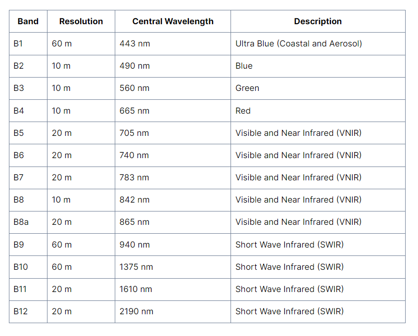
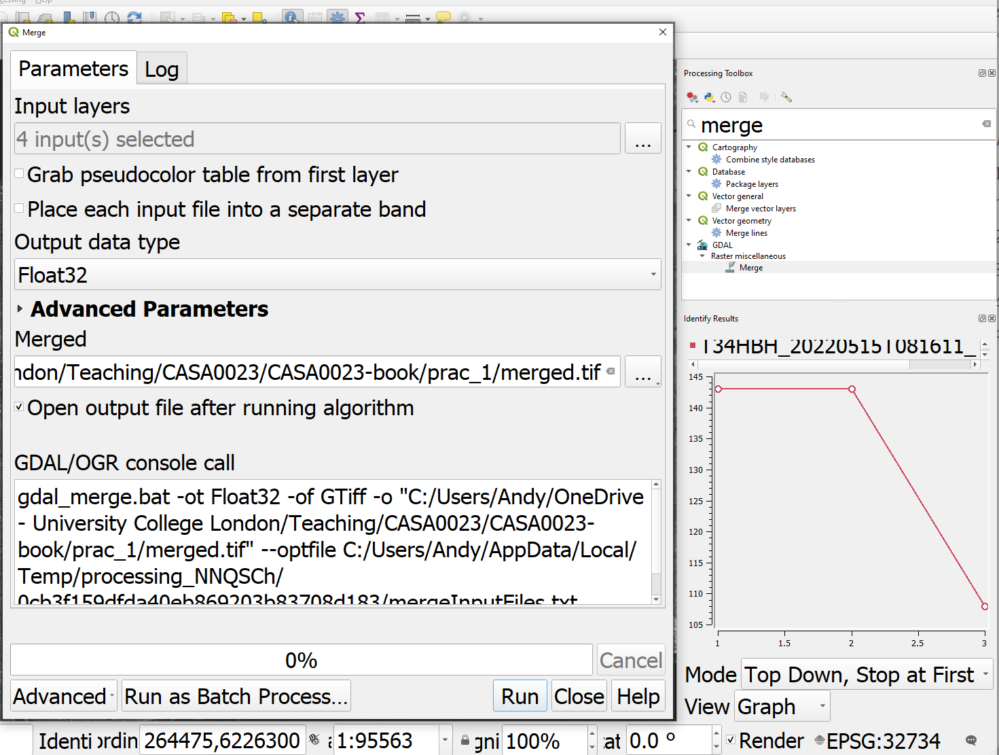
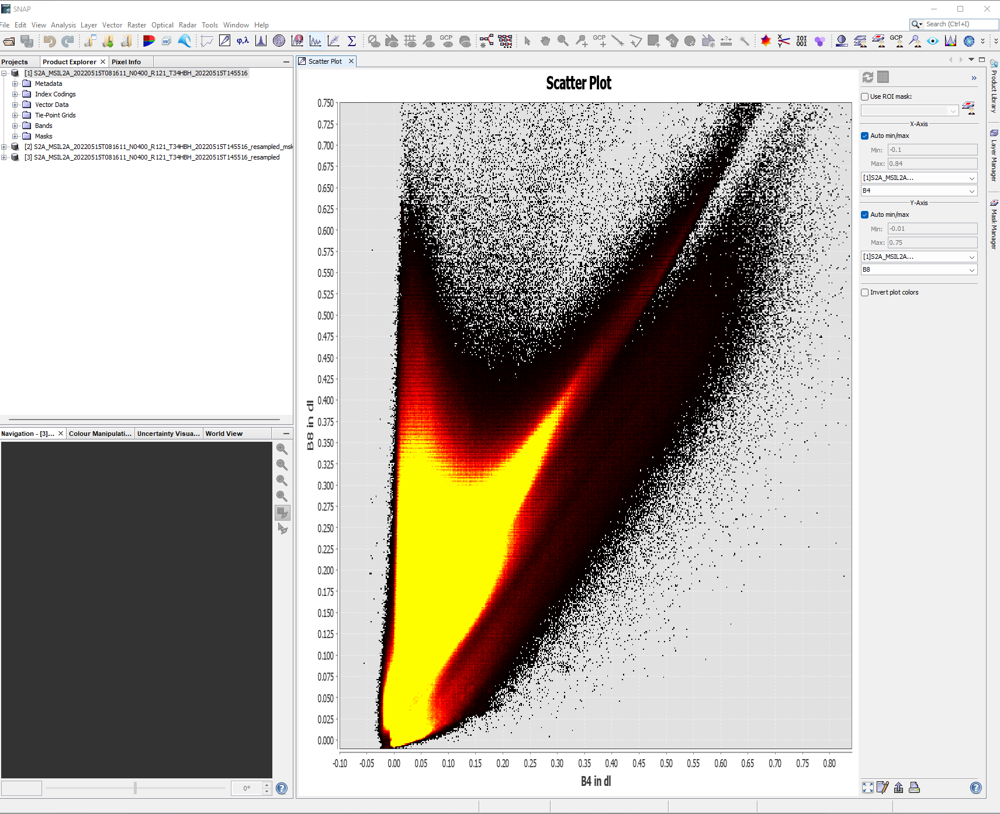

1 Getting started with remote sensing
1.1 Loading data
To start with we are going to send some time exploring remotely sensed data ready for future analysis. We will first look at Landsat, as we have seen this before in CASA0005. We will then move to Sentinel data.
You need to select a city of you choice and then using the image and explanation below…
1.1.1 Sentinel
1.1.1.1 Download
Go to the Copernicus Open Access Hub: https://scihub.copernicus.eu/dhus/#/home.
-
You will need to make a free account
- Draw around the study area
- Select image filter criteria
- Select search icon
- Download the S2MSI2A data

Within this image we have:
Allows you to either move around the global or draw a study area
An example of a study area
How to sort the image results
Sentinel mission selection :
- Sentinel product types refer to the amount of processing that has been undertaken on the multi-spectral imagery. S2MSI2A = Bottom of Atmosphere (BOA) or otherwise known as surface reflectance. Consult the product specification for more details.
You can also use the Sentinel 2 toolbox to replicate the coverstion from TOA to BOA - https://sentinels.copernicus.eu/ar/web/sentinel/technical-guides/sentinel-2-msi/level-2a/algorithm
The platform refers to either sentinel 2A or 2B. Theses are the same sensors but they operate at 180 degrees from each other reducing the revisit time from 10 to 5 days. 2A was launched first in 2015 followed by 2B in 2017.
Cloud cover e.g. [0 TO 5]
1.1.1.2 Open
Once downloaded and unzipped you’ll be presented with a load of folders! Here we are interested in the 10m bands…which are:

You’ll find then in the GRANULE > sensor number > IMG_DATA > R10.
Next open them up in QGIS to explore, if there is a TCI image this is a True Colour Image of B02 (Blue), B03 (Green), and B04 (Red) Bands - open this first, it’s just a single raster layer. See the Sentinel user guide definitions for any other acronyms you might need.

Using the Identify tool we can create a spectral signature by changing the view option to graph (look under the graph in the image above).
However the TCI values are coded between 0 and 255 which will limit what we can do with it. As the the radiometric resolution of Sentinel-2 is 12-bit, meaning brightness levels from 0 - 4095 it’s not clear how this product has been made.
So we can make our own raster stack using the BOA bands, if you recall we did this in CASA0005 in R.
But in QGIS it’s easier to visualise the output
Find the merge tool from the Raster miscellaneous tool box and select the following:

Note:
- The input layers are the 4 10m bands that I loaded into QGIS
- The tick box selected meaning each raster file will be it’s own layer
- The file being saved into a
.tiffas opposed to memory
Once merged we can created a true colour composite using the BOA data…to do so:
- Right click on the merged layer in the attribute table
- Symbology > Render type > select multiband color
In remote sensing the Red, Green, Blue display options are often called colour guns that are used to display images on the screen. For a true colour composite B1=Blue, B2=Green, B3=Red.
Try changing the contrast enhancement and see what happens, then consult GIS stack exchange to understand what is happening..
Of course we have only used the 10m bands so far…there are two options that we can take to use the full range of spectral data:
- Downscale the other bands to 10m forming a super-resolution
- Upscale the 10m to 20m
Down scaling is quite an intensive process and beyond the scope of this practical. However, it can be achieved using Sen2Res that is a plug in for the SNAP toolbox. Arguably SNAP is just another GIS specific to Sentinel, but we will explore it later as it makes some of these concepts easier to understand.
Upscaling aggregates the images to a more coarse resolution (e.g. 10m to 20m). The Sentinel user guide states that bands will be resampled and provided (e.g. within the 20m folder there are 10 bands). However, it’s not clear what method has been used, the documentation suggests nearest neighbour - https://docs.sentinel-hub.com/api/latest/data/sentinel-2-l2a/.
This can also be termed resampling, and nearest neighbour simply means taking the new raster resolution and then assiging the value from the closest value in the original data. Others approaches include bilinear or cubic convolution resampling.
1.1.1.3 SNAP
SNAP stands for Sentinels Application Platform it is a collection of toolboxes specifically for pre-processing and analysing remotely sensed data.
SNAP allows us to easily do undertake many GIS raster type analysis that we’ve seen / discussed in other modules (like CASA0005) and that we will come across within this module including:
- re sampling raster data
- re projecting
- masking
- classifying data
- principal component analysis
- orthorectification
- many more methods!
Aside from these methods in a GUI the real benefit is that it’s made to use remotely sensed data, unlike QGIS or R that are more standard GIS software. Let’s explore some features of SNAP.
1.1.1.3.1 Load data
File > Open Product > select the .zip that was downloaded. Do not rename it or unzip it before hand!
In the side bar under Product Explorer there will be a lot on data that you can load. The remotely sensed data in under Bands and then each band is listed (e.g. B1 443nm). What does 443nm mean?
1.1.1.3.2 SNAP layout
The layout of SNAP isn’t too different to QGIS, we have:
- Products on the left side bar
- Map info in the bottom left
- Layer / mask managers in the right sidbar
- Processing tools in the top tool bars
1.1.1.3.3 Image statistics
1.1.1.3.4 Scatterplots
Under the analysis button there are a variety of tools we can use to explore some image statistics….for example, here i have created a scatter plot of band 4 (x axis) and band 8 ( y axis). These bands are the red (vegetation absorbs) and Near-infrared (NIR, that vegetation strongly reflects)…so where we have high values of NIR and low values of red the plot represents dense vegetation whilst low values of both red and NIR are usually wet bare soil:
The output should look somewhat like a “Tasseld Cap”, although this isn’t the tasseled cap transformation which we will have a quick look at..


http://geofaculty.uwyo.edu/rhowell/classes/remote_sensing/labs/lab_11_2018_alternate_vegetation.pdf
1.1.1.3.5 Histograms
1.1.2 Landsat
Either way now we want to merge the 20m imagery
1.1.2.1 Select POIs
https://github.com/robmarkcole/satellite-image-deep-learning#techniques
https://urbanspatial.github.io/classifying_satellite_imagery_in_R/#Supervised_Classification
https://opengislab.com/blog/2018/5/14/flood-mapping-with-sentinel-1-data-using-snap-and-qgis